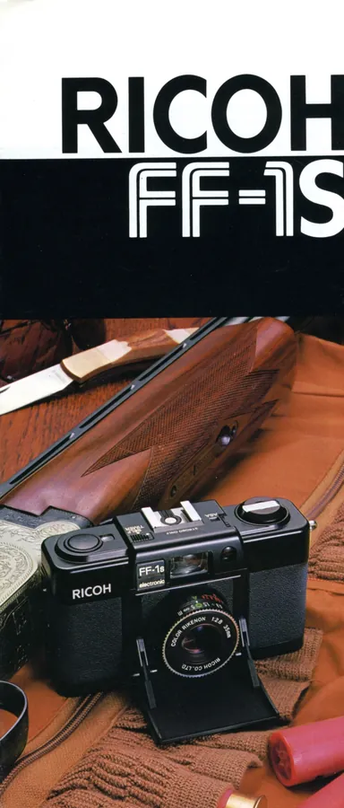
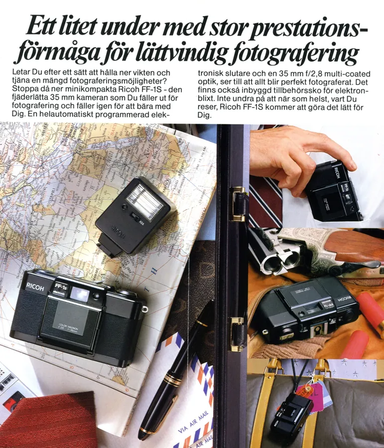
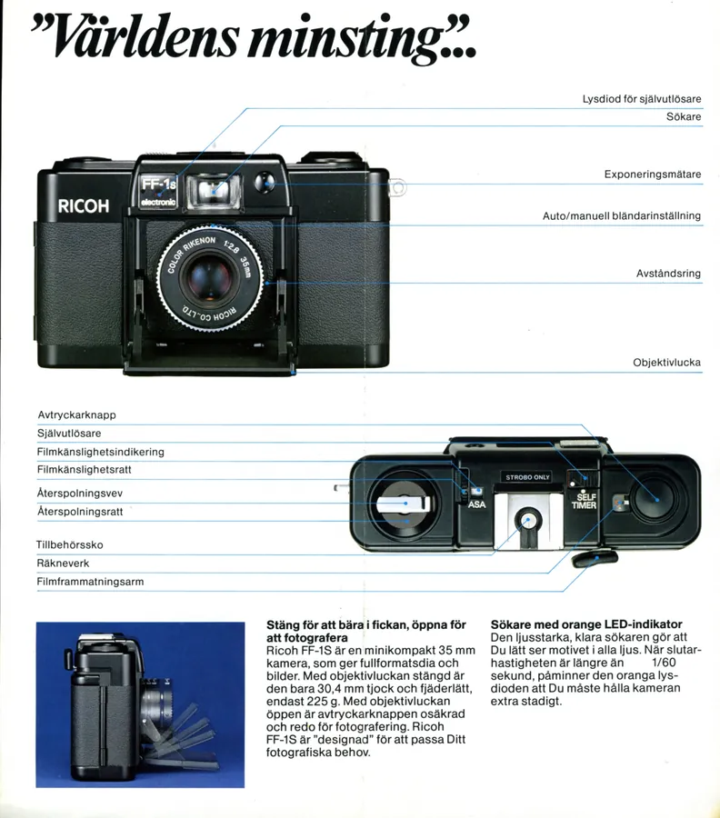
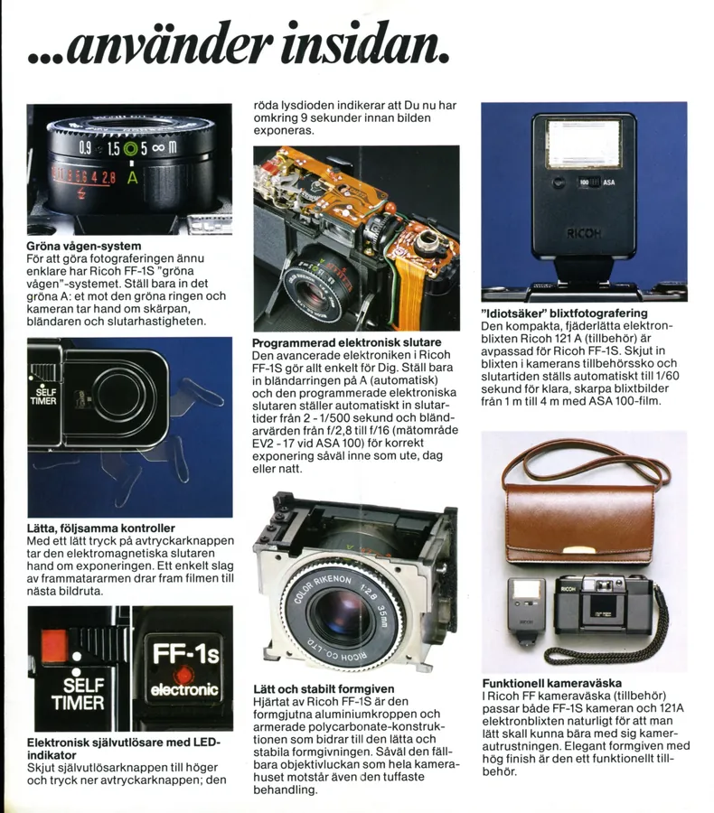
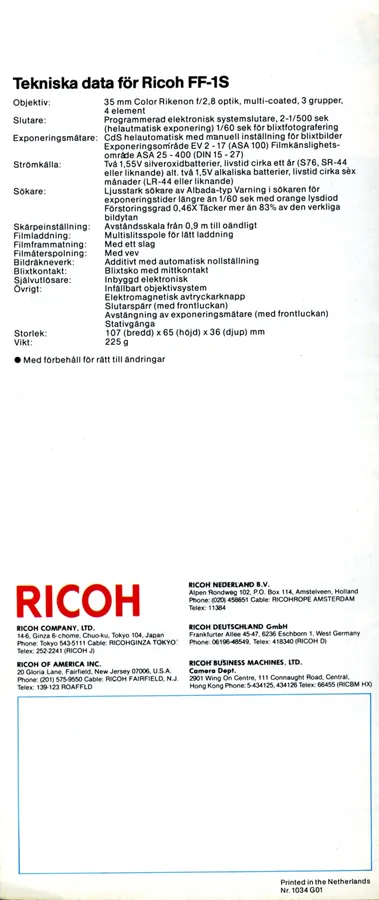

Przejdź do treści
Zenbliski
Menu
Archiwalne
Analogowe
Kolekcja
Akcesoria foto
Materiały reklamowe
Artykuły – blog
Foto ciekawostki
Cyfrowe
Materiały reklamowe
Foldery i prospekty
Ricoh
FF-1S,
szwedzki





Poprzednia
Ricoh AD-1 / A-2, 1981 r., szwedzki
Następna
Ricoh XR6 z AF Rikenon, szwedzki